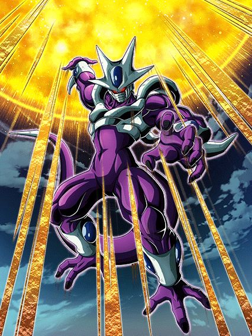
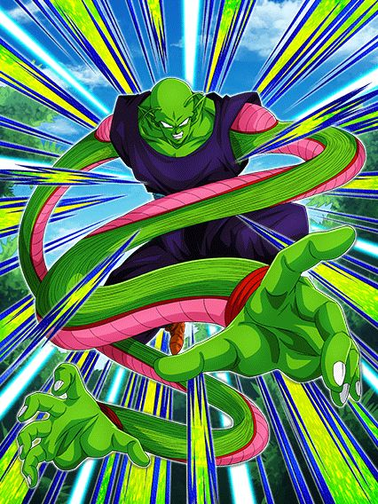

A melhor celebração de downloads de todas.
Essa foi facilmente a melhor celebração do ano, e nas top 3 melhores celebrações da história desse jogo, tudo foi insano do começo ao fim
Eventos, cards, tudo estava num hype insano, isso junto ao memes claro, eu amei essa época do jogo.
^ Sumário (clique para ir a qualquer um dos tópicos)
KKKKKKKKKKKKKKKKKKKKKKKKKKKKKKKKKKKKK se ferrar mano
Não tem competição, o marketing da celebração de downloads foi simplesmente genial, o rap não é ruim, na verdade ele gruda fácil na mente e é hilário ao mesmo tempo
Nada vai superar chegar na escola e cantar com os manos "COOLA COOLA FREEZA NO BROTHA" como um bando de esquizofrênicos tá?
Literalmente ninguém esperava isso e foi incrível um rap do cooler ser a primeira coisa da celebração
Fato extra a mencionar: Na conta oficial do twitter do dokkan, o rap só tá disponível pra ver se vc estiver no japão ou obviamente usar uma VPN, oq é meio aleatório mas no momento q alguém descobriu, o negócio estourou fácil.
Eu amo esse video, de coração
Obrigado dokkan.
COOLER LR

ADICIONAIS.
TODOS ELES.
Esse mano tornou os vilões usáveis outra vez e ele por si só é um card extremamente divertido de jogar, eu amo usar ele toda vez q é possível
Acho q o mais engraçado é o cooler não ter um kit extremamente complexo mas q é muito forte e divertido, já q ele se resume a atacar 1 bilhão de vezes e ele faz isso já
Pra começar ele tem uma intro incrível com uma condição legitimamente fácil de ter outro terrifying conquerors no time, isso junto com 1 adicional a mais
E ele vai precisar de adicionais, já que além dos 100% de ATK e DEF q ele tem de base ele ganha mais 100% só que de 10 em 10 a cada ataque feito
Pode até parecer muito, mas não é, pq o cooler lança pelo menos 3 ataques por turno e com a intro, 4 (se quiser contar o hidden potential, 5, isso já é metade buildado em 1 turno)
Depois de 10 ataques, ele ainda lança um super adicional garantido, e pra esse cara, supers adicionais são a salvação pq cada super aumenta 50% de DEF no turno, isso com big bad bosses.. rapaz
Aí vc pode até pensar "ok ele ataca bastante mas o dano é bom?", mas eu lhe respondo que com certeza, já que pra garantir que ele fosse bem balanceado, esse cara STACKA ATK no ultra super attack, então é, além de todo o build atacando, esse cara ainda stacka, dá pra pedir mais de um personagem?
Dá sim.
A active do cooler é a literal nuke, depois de vc stackar sei lá quantas vezes vc mandar uma supernova absurda com uma animação linda e uma ost maravilhosa.. realmente um dos cards mais brabos do ano
Lógico, o cooler é 100% baseado no rng pra vc dar sorte nos adicionais, mas se rolar, vc cozinha muito slk
PICCOLO STR THE GOAT

O CARD MAIS GENTE BOA DESSE JOGO.
O piccolo str revolucionou o que a gente considerava normal pra suportes, além de ter sido o primeiro de muitos piccolos bons que viriam no futuro
E não tem como, esse cara funciona em qualquer time, ele é genial
O cara simplesmente tem defesa ativa, 200% de ATK e DEF no começo do turno e tem 15% de redução de dano por movie heroes na rotação PQ SIM, ELE PODE
Ele tmb ganha 50% de ATK e DEF a mais quando leva 1 golpe, além de 30% de chance de critar q não é muito oooomaga já q ele não dá tanto dano assim
O piccolo é tudo q vc poderia pedir num suporte, já q ele é um tank muito bom, e ainda dá ki e 30% de ATK e DEF pra todo mundo sem complicação ou condições horríveis
Ele tmb tem 50% de ATK e DEF contra apenas 1 inimigo e caso tenham mais de 1 ele substitui por 100% de DEF mas isso não é insanamente relevante
Em resumo, palavras não são o bastante pra descrever o quão incrível é o piccolo, o cara simplesmente é o suporte mais gente boa de todos e eu continuo amando jogar ele em qualquer time e ele cozinhar sempre
GOKU CARNIVAL
THE GOAT.
O primeiro LR carnival de todos e eu devo dizer que ele foi muito bem introduzido, sendo o primeiro lider direto 200% pra powerful comeback, animações lindas, kit muito forte e osts que eu irei falar mais depois..
Sobre o goku, ele é um card "oposto" ao cooler, já que enquanto o cooler é uma máquina de dano implacável, esse cara é um tank insano desbalanceado
Bom, esse cara stacka DEF, já começa aí a zueira pq a defesa dele já é alta, então eles decidiram colocar nele um buff de 59% de DEF quando ele leva um ataque por turno, ou seja, não dá pra ver no turno, mas se vc tem uns 300 e poucos mil de defesa, depois de tomar um ataque vc já tá na casa dos 500k
Ele tmb builda 5 de Ki e 59% de ATK com 6 golpes, oq é bem decente e é necessário ele tomar esses golpes pra dar uns 7 ou 8 milhões de dano, por sinal, quando ele leva um ataque, além do buff de DEF ele fica efetivo contra tudo, então aproveite
E aí vem a melhor parte, esse cara tem a mecânica de defesa ativa mais decente possivel, já que acima de 60% de HP vc tem defesa ativa (lembrando todos os buffs defensivos mencionados antes), e caso esteja abaixo de 60%, o goku perde a defesa ativa de propósito, pois essa é a mesma condição pro revive dele que é simplesmente inexplicável, animação incrível e a ost que foi a melhor do jogo por um bom tempo
Essa animação tá em outro nivel, e o compositor do dokkan cozinhou tudo nessa ost, é absurdo um negócio desse slk
Enfim, pós-revive vc ganha MAIS buffs, já que agora sua defesa ativa é permanente, ou seja, sem mais fraqueza, e agora o goku tem 50% de chance de crítico, oq significa q ele levar um ataque pra ficar efetivo não é obrigatório mais
É meio óbvio q a posição desse goku é ficar no slot 1 sempre, torcer pra não levar um super turno 1 slot 1 pra ele stackar um pouco e sempre levar 1 golpe pra defesa extra, e no geral tentar guardar o revive pra hora certa
Mas não acaba por aí.. pq esse cara ainda tem uma active depois de reviver
Essa active é uma coisa, tipo, ela dá um dano legal se critar mas pô, animação meio feia, q por sinal fica muito zuada se o boss for maior q o goku, pelo menos a ost e a tela de K.O são incríveis de qualquer jeito, e infelizmente ela tem a maldição de quebrar 1 ataque inimigo no começo, só que por algum motivo os bosses amam ser trolls e dar um super no segundo ataque ao invés do primeiro pra q vc vire um 💀 vivo
Enfim, eu amo esse card, o mano me carregou pela red zone inteira slk
O RAP DO METAL COOLER
Não bastou 1, precisávamos da continuação.
Pessoalmente, eu prefiro o primeiro, mas esse é muito bom também e não tem como, o "coola coola freeza no brotha" é bom demais pra não ser repetido
Eu ainda fico estupefato com isso, o marketing pra celebração foi não só 1, mas 2 raps
Eu até agradeceria o autor não sabendo quem é, mas felizmente tempos depois do rap ser lançado, o cantor decidiu se revelar no twitter, então é, fatos curiosos
Vc pode ir até a conta dele aqui se quiser.
E pessoalmente, os memes que vieram com esse rap não foram poucos, o metal cooler de terno é genial cara, tem como n
Oh um video de minha autoria? Obrigado a mim mesmo
Você chegou ao fim dessa página!
Ou talvez.. eu não tenha terminado ainda? Sei lá
Obrigado por ler tudo, e fica a vontade pra ver outras